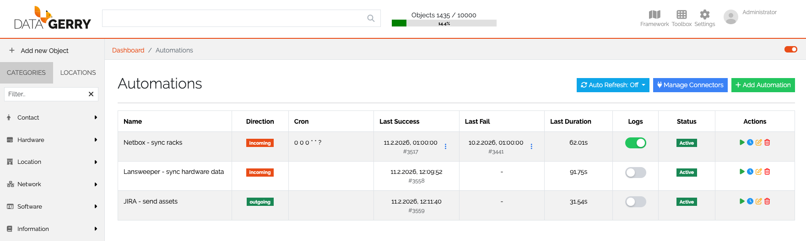
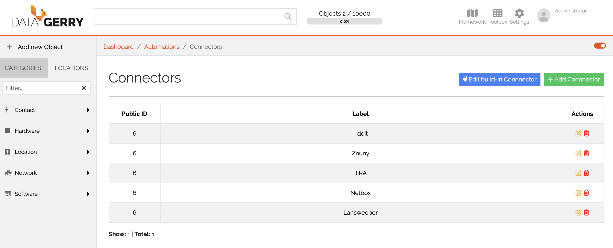

Automations
Generell
The Automations feature in DataGerry allows you to create and manage interfaces directly through the user interface. In the background, OpenCelium is used to handle the connections to external systems, making it easy to automate tasks and manage integrations.
Terminology
Automation
An Automation in Datagerry is a combination of a Connection and a Scheduler entry. It defines a task that runs according to a defined schedule and interacts with a data source via a connection.
Automation-IDE
The Automation-IDE (in OpenCelium called Connection Editor) is the interface where Automations are created, edited, and managed. Templates can be loaded within the Automation-IDE as starting points for new Automations. After loading, templates can be modified and saved.
Cloud vs. On-Premises
Cloud: In the Cloud version of DataGerry, licenses are automatically assigned to users when they use DataGerry in the cloud. Therefore, the license overview is not relevant in this version.
On-Premises: In the On-Premises version of DataGerry, you can access the OpenCelium license overview. This allows you to manage and monitor the licenses being used.
Automation Overview
{kind=link}

Picture: Automation overview
Accessing Automations
To access Automations, navigate to the Toolbox menu in the DataGerry dashboard, and select the Automations sub-menu. You will be presented with a table displaying all created automations, which includes the following key information:
Name: The name of the automation.
Direction (Data Flow Direction): Defines the direction of the interface—either Incoming, Outgoing, or Internal.
Cron Expression: The time-based configuration that defines how frequently the automation will run.
Last Success: The last successful execution time of the automation.
Last Failure: The last time the automation failed.
Last Duration: The duration of the last automation run.
Logs: Logs that can be toggled on or off for monitoring the automation’s activity.
Status: The current status of the automation (active, inactive, etc.).
Action List: Here, you can start, edit, adjust the cron expression, or delete the automation.
Automation Refresh
You can enable auto-refresh for the Automations page, which ensures that you are always seeing the most up-to-date status and data related to your automations.
Managing Connectors
In the Automations section, you can manage and configure connectors. You can modify existing connections or create new ones to send or receive data from various sources.
{kind=link}

Picture: Automation overview
Add Automation
Steps to create a new automation:
Click on Create New Automation.
A form will open asking for the following details: - Name of the automation. - Description (optional). - Direction of Data Flow: Choose the desired data flow direction (incoming, outgoing, or internal). - Get/Send data from/to Connector:: Select the connector through which you want to send or receive data. - Use a predefined interface template:: The available predifined templates are loaded based on the selection of the connector and the direction of the data flow. A template is a predefined interface blueprint that can be loaded in the Automation-IDE. It serves as a starting point to quickly display an interface. After loading, the template can be modified and customized, and then saved.
Start creating Automation. Please refer to the OpenCelium Documentation to know how to start. The first to pictures looks different to DataGery UI. Please skip them. Its important to know, how to use operators oder api methods.
Manage Connectors
The Manage Connectors section allows you to configure and maintain connectors that are used within Automations. Connectors define how DataGerry communicates with internal or external systems.
Built-in Connector
The Built-in Connector represents the DataGerry system itself. It is used when Automations interact directly with the local DataGerry instance.
To configure the Built-in Connector, the following information must be provided:
URL of the DataGerry instance
Username
Password
In the DataGerry Cloud version, an additional field is required:
x-api-key
The x-api-key can be obtained from the DataGerry Service Portal.
Add Connectors
You can also create connectors for third-party applications.
To create a new connector, click on Add Connector.
This opens the Add Connector form, which is divided into two sections.
Left Side – Meta Information
On the left side, general connector settings are defined:
Name of the connector
Description (optional)
Invoker
SSL Verification (enable/disable)
Timeout
The Invoker represents the API definition of the third-party application. It is a core component of a connector and ensures that:
The authentication mechanism of the third-party API is understood
The available API methods can be accessed within the Automation IDE
Right Side – Authentication Configuration
On the right side, the required authentication fields are displayed dynamically, depending on the selected Invoker.
Typical authentication fields include:
API URL
Username / Password
API Token
The exact fields depend on the authentication mechanism required by the third-party system.
Testing the Connector
Before a connector can be created and saved, a Test Call must be performed.
To validate the configuration:
Fill in all required fields.
Click the Test button.
Ensure the connection test is successful.
Only after a successful test can the connector be saved and used in Automations.
License Overview
In the On-Premises version of DataGerry, you can manage the OpenCelium license directly from the user interface. This is done via the License Overview page, which provides important information about the current license status.
Accessing License Overview
The License Overview page is available from the Automations section in the UI (On-Premises only). It allows administrators to view and manage licensing details for OpenCelium.
License Information
On this page, the following information is displayed:
API Request Usage: Shows how many API requests have been executed in the current month.
License Validity: Indicates whether the currently installed license is valid or expired.
This information is useful to:
Monitor API consumption
Ensure that the license is active
Plan for license renewal if needed
Cloud Version
In the DataGerry Cloud version, this page is not required because licenses are automatically assigned to users when they use the platform. Therefore, license management is handled entirely by the service. |
Documentation and Further Help
For more detailed information on the Automations feature in DataGerry and the OpenCelium integration, please refer to the OpenCelium Documentation.